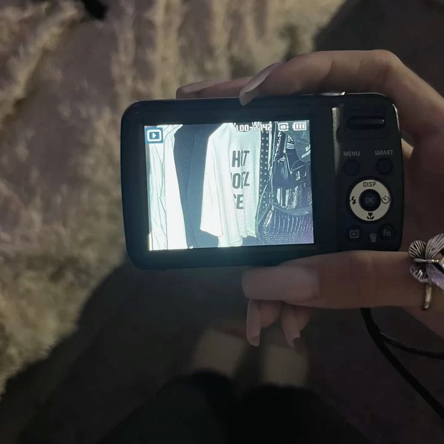
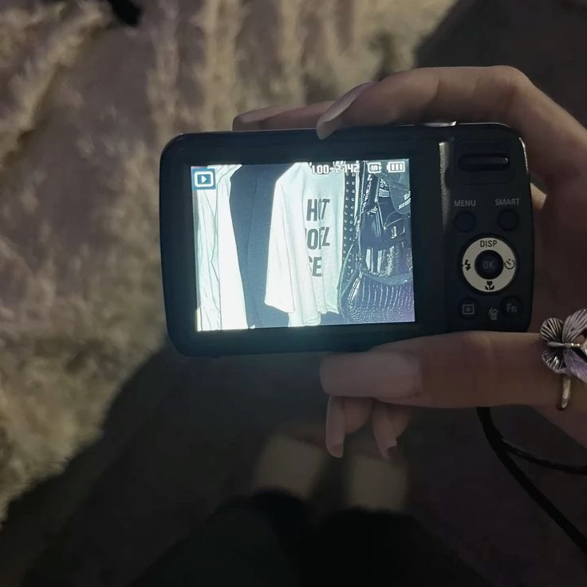

4.Fotos.
Por ultimo el tomar fotos a mis amigos , a mi misma o a cosas que me gustan , me hace muy feliz y me gusta mucho , es como guardar recuerdos para verlos despues
Por ultimo el tomar fotos a mis amigos , a mi misma o a cosas que me gustan , me hace muy feliz y me gusta mucho , es como guardar recuerdos para verlos despues
